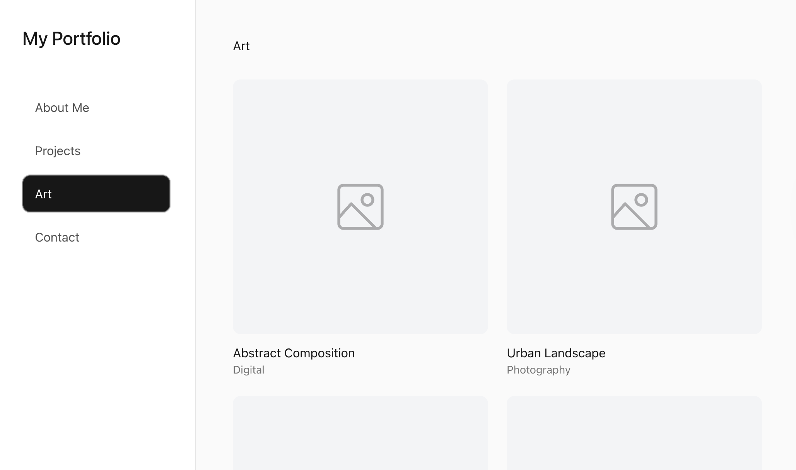
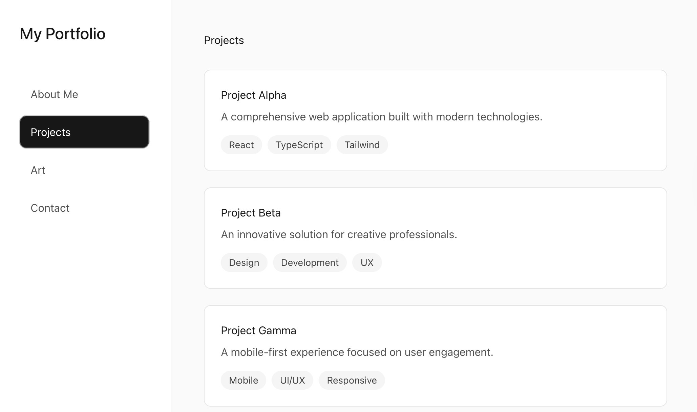
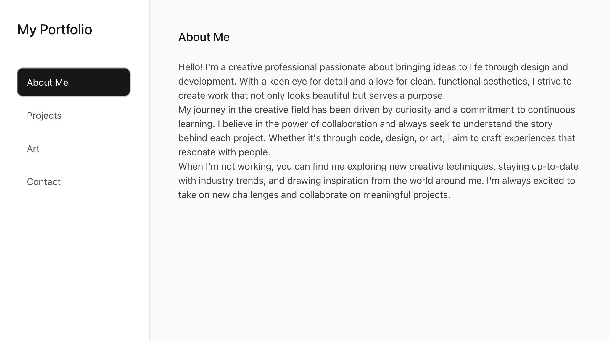
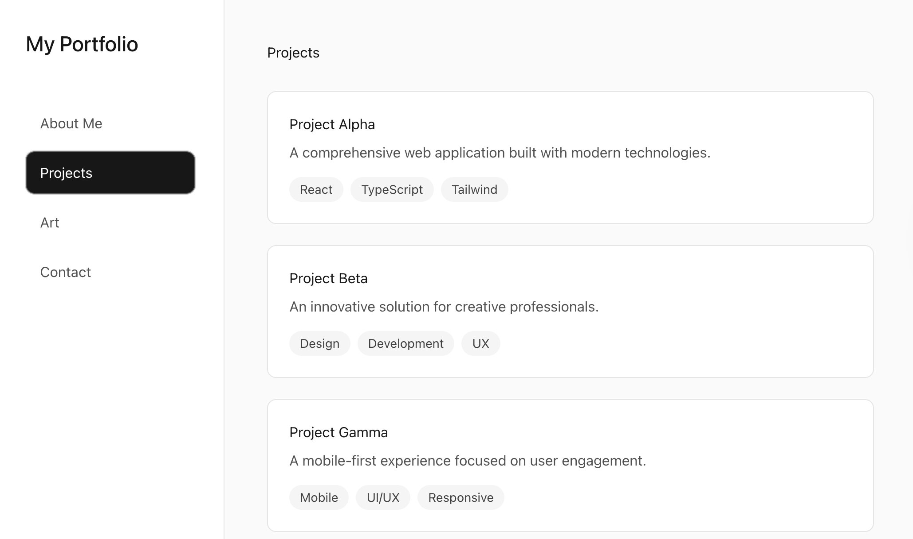
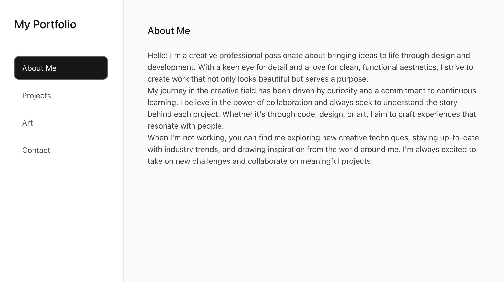

A responsive multi page portfolio built to present my projects and skills clearly and reliably. The site was planned using Figma wireframes, then developed with a focus on accessibility, consistent behaviour, and cross device testing to ensure the content renders correctly and remains easy to navigate.
Testing and Behaviour Focus
- Validated navigation and page routing to prevent broken paths
- Checked layout stability across screen sizes and devices
- Tested keyboard navigation and semantic HTML structure
- Reviewed colour contrast, headings, and link clarity for accessibility
- Verified responsive images, spacing, and typography consistency
- Deployed and iterated based on issues found during real use
Features
- Clear content structure to help users understand my work and skills quickly
- Responsive layout for desktop and mobile
- Consistent spacing, typography, and visual hierarchy
- Accessible front end practices using semantic HTML
- Simple navigation across pages
- Deployed live for continued improvement
Challenges and Learnings
Building and deploying this site strengthened my ability to validate front-end behaviour in real conditions. It improved my approach to checking accessibility, identifying layout edge cases, and ensuring consistent presentation across different browsers and screen sizes.
Tech Used
Live Version and Repo
Live Website on Netlify | GitHub Repository
Wireframes
Early planning focused on defining key content sections and layout structure before development. This supported clearer navigation, improved consistency across pages, and made it easier to validate user journeys during implementation and testing.
 


